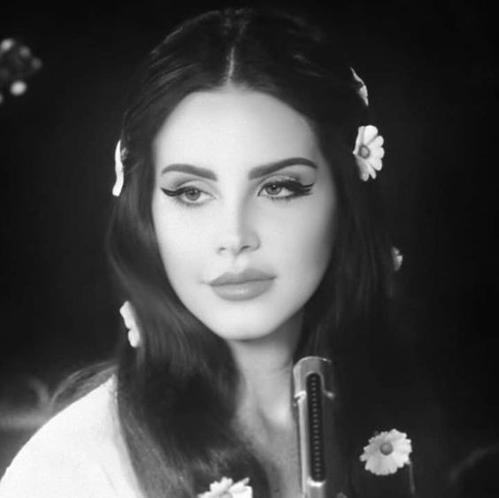
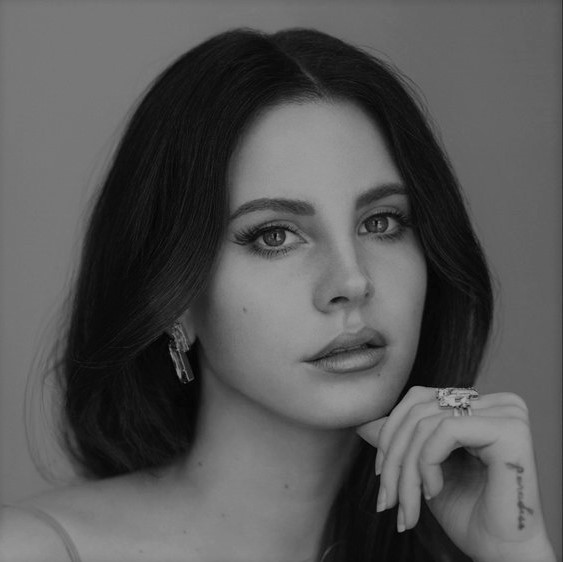
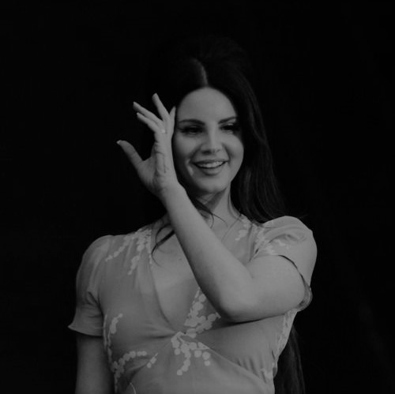
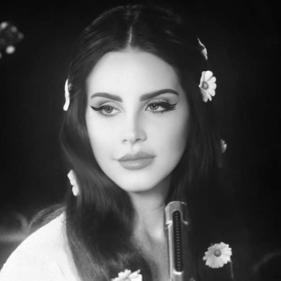
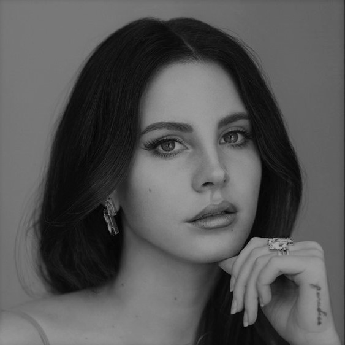
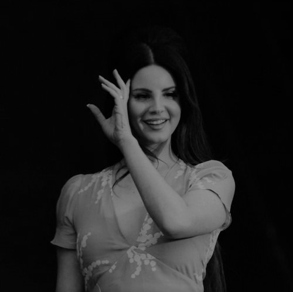

Born to Die Word Tour
Fechas: Noviembre 4, 2011- Septiembre 25, 2012. Asociado al album Born To Die. Completo un total de 39 shows en Oceania, Europa y Norte America

Paradise Word Tour
Fechas: Abril 3, 2013- Octubre 18, 2014. Asociado al album Paradise. Completo un total de 94 shows en Asia, Europa, Norte America y America del Sur
The Endless Summer Word Tour
Fechas:Mayo 7, 2015- Junio 16, 2015. Asociado al album Ultraviolence. Completo un total de 20 shows en Norte America
Festival Tour
Fechas: Junio 3, 2016- Noviembre 20, 2016. Asociado al album Honeymoon. Completo un total de 14 shows Europa y Norte America
LA to the Moon Word Tour
Fechas: Enero 5, 2018- Julio 24, 2019. Asociado al album Lust For Life. Completo un total de 47 shows en Oceania, Europa, Norte America y America del sur
Norman Fucking Rockwell Word Tour
Fechas: Septiembre 21, 2019- Junio 9, 2020. Asociado al album Norman Fucking Rockwell. Completo un total de 28 shows en Europa, Norte America, Asia y America del Sur